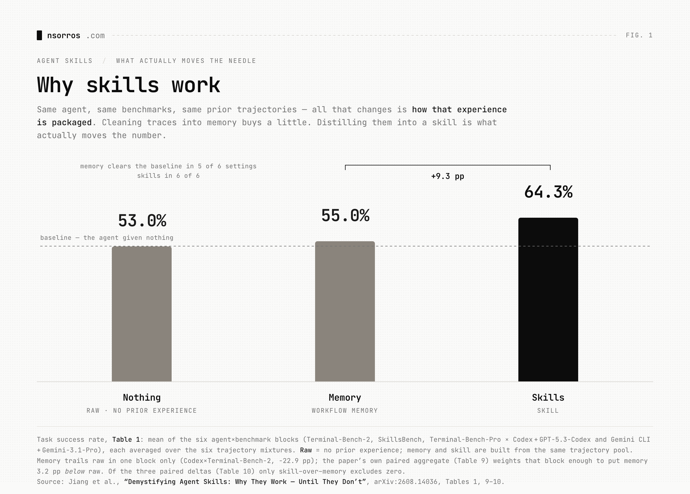

Why skills work?
There are a couple of ways to teach an AI system how to do a task. Among them, skills have quickly become one of the most popular, but why?
The short answer is because it works quite well for a moderate amount of effort, but the longer answer involves looking at the alternatives as well.
1️⃣ Memory
A rather obvious and simpler alternative is for an AI system to learn by inspecting its own errors. This would be looking at past conversations and inferring from your feedback or behaviour things it got right and wrong. The issue with this approach is that the signal-to-noise ratio is lower when looking at all past interactions because missing even one important detail or prior error can sink performance back to the baseline. You can overcome this with a memory system. That is an active process that looks into past conversations and distills learnings into its memory, i.e. a dedicated space containing only the signal part. Not only do AI systems do that, but it also performs quite well, although a bit lower than skills.
2️⃣ Skills
This is partly because skills in fact are a more deliberate choice of information. Sometimes manually created, others automatically, but in any case they are built intentionally to patch a known limitation of the AI system and provide back a clear way of doing so. Another way to think about why skills are better than memory is that in the case of memory the system is trying to infer what is right and wrong whereas in skills you deliberately tell the system.
3️⃣ Train
Of course all the above ways do not truly change the underlying model; if anything, they can be considered as part of the harness around the model. You can of course also train the actual model to perform better and in fact this will undeniably perform the best, but the cost of doing so might be prohibitive or at least not worth it for most. Skills, on the other hand, not only have a big impact on performance, they are also relatively easy to develop, and you can easily share them and explain them. All properties which are not present or as easy when training a new model.
💡 Here is the catch though: memory has been improving quite rapidly and it’s catching up to skills in terms of performance, so is it worth developing and thinking about skills? Well, one reason why skills might be a good idea and a differentiator is that memory takes time to build. It’s the difference between training a junior person in months or years vs a few days. So a better way to think about it is: skills make your AI system better from day one while memory slowly compounds adjustments as you use it.
